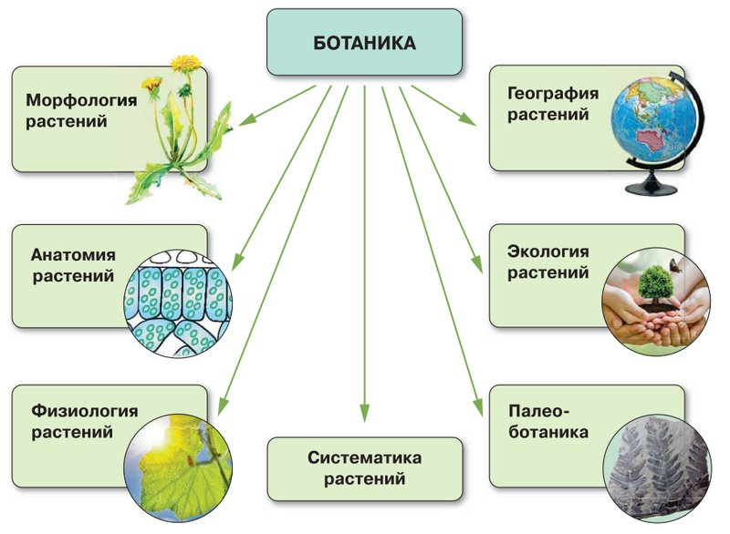
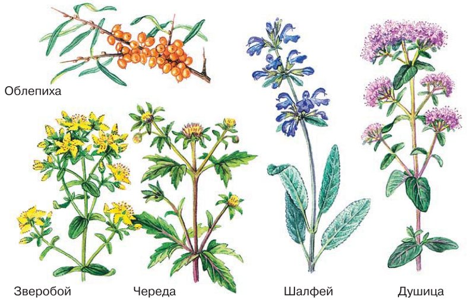
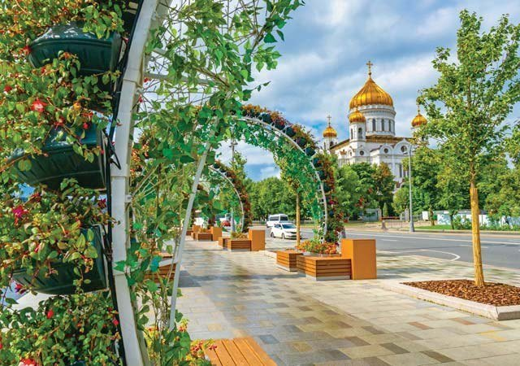

Введение. Ботаника — наука о растениях
Амина, это первая тема учебника биологии. Весь год ты будешь изучать растения, а сегодня узнаешь, какая наука ими занимается и зачем она людям.
Вспомни своё утро. Хлеб к завтраку испекли из муки, а муку смололи из зёрен пшеницы. Чай заварили из листьев чайного куста. Футболку сшили из хлопка, а тетрадь сделали из древесины.
Даже воздух, которым ты дышишь, пополняют кислородом растения. Выходит, за один день ты встречаешься с растениями сотни раз, даже если не видишь ни одного листика.
Наука, которая изучает растения, называется ботаника. Вот о чём эта тема:
У каждого шага написано, на какой странице учебника искать. Внизу шага есть «Подробнее, как в учебнике»: там всё, что есть на этих страницах, ничего не пропущено. Сначала учи по коротким шагам, а перед уроком открой «подробнее».
Надпись вверху шага подскажет, откуда он: синяя — из учебника, золотая — задание учебника, оранжевая — сверх учебника (пересказ, словарик, игры, самопроверка). В «Содержании» шаги так же разбиты на группы.
Подробнее, как в учебнике · с. 6
- Тема называется «Введение. Ботаника — наука о растениях», она занимает страницы 6–9. С неё начинается глава 1 «Растение — живой организм» (это название написано вверху страниц 7 и 9).
- В начале темы — рамка «Вспомните» с двумя вопросами: какие растения вы знаете? где обитают растения? Их разбираем на шаге 2.
- В тексте три части с цветными заголовками: «Что изучает ботаника», «Разделы ботаники», «Значение растений в жизни человека».
- Рисунки: рис. 1 «Науки, изучающие растения» (с. 6), рис. 2 «Лекарственные растения» (с. 7), рис. 3 «Использование растений при озеленении городов» (с. 8). Все три есть в шагах.
- В конце: «Запомните» (7 слов — в словарике), «Проверьте себя» и «Подумайте!» (с. 8), «Моя лаборатория» с заданиями и рассказом «Это интересно» (с. 9).
Вспомни, что ты уже знаешь
Тема начинается с рамки «Вспомните». Это разминка: про растения ты уже кое-что узнала в 5 классе и просто глядя вокруг. Ответь сама, вслух или в уме, а подсказки открывай, если застряла.
Какие растения вы знаете?
Подсказка: начни с того, что видишь каждый день, — деревья во дворе, цветы на подоконнике, овощи и фрукты на кухне. А в 5 классе ты узнала, что растения бывают очень разные: водоросли, мхи, папоротники, хвойные, цветковые. Назови по два-три растения из каждой группы.
Где обитают растения?
Подсказка: вспомни среды жизни, про которые ты узнала в 5 классе. В каких из них можно встретить растения? Подумай про лес, луг, горы, пустыню, пруд и море.
Оба вопроса ведут к главному: растений очень много, и живут они почти везде. Изучить их все — работа для целой науки. Про неё следующий шаг.
Что изучает ботаника?
Представь, что тебе подарили незнакомый цветок в горшке. Сразу появляются вопросы: как он устроен? Сколько ему нужно света и воды? Где он растёт в природе? Ответы на такие вопросы ищет ботаника — наука о растениях.
Слово пришло из греческого языка: «ботанэ» значит «зелень, трава, растение».
Ботаника изучает пять вещей:
- строение — как растение устроено: корень, стебель, листья, цветок;
- жизнедеятельность — как растение живёт: питается, дышит, растёт;
- многообразие — какие бывают растения: от крошечного мха до огромного дуба;
- распространение — где на Земле растения растут;
- взаимосвязь растений с окружающей природой и друг с другом — например, как дерево связано с почвой, солнцем и птицами.
Строение, жизнедеятельность, многообразие, распространение растений, их взаимосвязь с окружающей природой и друг с другом изучает наука о растениях — ботаника.
Подробнее, как в учебнике · с. 6
- «Что изучает ботаника». Строение растений, их жизнедеятельность, многообразие, распространение, их взаимосвязь с окружающей природой и друг с другом изучает наука о растениях — ботаника.
- Слово «ботаника» происходит от греческого «ботанэ» — зелень, трава, растение.
Разделы ботаники: как растение устроено и как живёт
Ботаника такая большая, что её разделили на части — разделы. Это как школа: здание одно, а кабинетов много, и в каждом свой предмет.
В учебнике сказано: ботаника — «комплекс взаимосвязанных самостоятельных дисциплин». По-простому: несколько отдельных наук, которые помогают друг другу. Все они показаны на рисунке 1.

Морфология растений изучает внешнее строение растений и то, как у них формируются органы. Органы — это части растения: корень, стебель, лист, цветок. Пример: какие у одуванчика корень, листья и цветок.
Анатомия растений изучает внутреннее строение органов и тканей, то есть что у растения внутри. Пример: срез листа под микроскопом — он состоит из маленьких клеточек, как на рисунке.
Физиология растений изучает процессы жизнедеятельности, которые идут в растении. Пример: как растение пьёт воду, дышит и растёт к свету.
Систематика составляет научную классификацию растений и выясняет, кто кому родственник. Классификация — это раскладывание по группам. Пример: яблоня и груша — близкие родственницы.
А почему «ткани» и «ход формирования органов»?
Ткань — группа похожих клеток, которые делают общую работу. Например, одни клетки листа проводят воду, другие защищают лист снаружи.
Ход формирования органов — как части растения появляются и вырастают: из почки развивается побег, из цветка — плод. Про клетки, ткани и органы будут следующие темы учебника.
Подробнее, как в учебнике · с. 6
- «Разделы ботаники». Ботаника представляет собой комплекс взаимосвязанных самостоятельных дисциплин (рис. 1).
- Изучением внешнего строения растений и хода формирования их органов занимается морфология.
- Анатомия растений изучает внутреннее строение органов и тканей растительных организмов.
- Физиология растений рассматривает процессы жизнедеятельности, происходящие в растительном организме.
- Систематика разрабатывает научную классификацию растений, выявляет их родственные отношения.
- Рис. 1 «Науки, изучающие растения» (с. 6): в центре «Ботаника», от неё стрелки к семи разделам. Морфология растений — рисунок одуванчика; анатомия растений — клетки под микроскопом; физиология растений — лист на солнце; систематика растений; география растений — глобус; экология растений — деревце в ладонях; палеоботаника — отпечаток древнего растения в камне.
Разделы ботаники: где растут, с кем связаны, какими были
География растений изучает, где на земном шаре растут растения и их сообщества и почему именно там. Сообщество — растения, которые растут вместе: лес, луг, степь. Пример: кактусы растут в пустынях, а в тундре — мхи и низкие кустики.
Экология растений изучает связи растений с другими живыми организмами и с неживой природой. Живые — это животные, грибы, другие растения; неживая природа — свет, вода, почва, воздух, тепло. Пример: пчела опыляет цветок, а цветок кормит пчелу нектаром.
Палеоботаника — наука о вымерших ископаемых растениях. «Палео» по-гречески значит «древний», а ископаемые — те, что находят в земле и в камне. Пример: отпечаток листа древнего папоротника на камне, как на рисунке 1.
Все семь разделов вместе:
Подробнее, как в учебнике · с. 6–7
- География растений изучает закономерности и причины распределения растений и их сообществ на земном шаре.
- Экология растений изучает их взаимосвязи с другими живыми организмами и неживой природой.
- Палеоботаника — наука о вымерших ископаемых растениях.
Как ботаника помогает людям
Ботаника — не только книжная наука. Её знания нужны на поле, в лесу, на заводе и в аптеке.
Для этого у ботаники есть прикладные отрасли — части науки, которые «прикладывают» знания к делу. Пример: узнали, что нужно пшенице для роста, и вырастили больше хлеба.
Эти знания лежат в основе:
- растениеводства — выращивания растений на полях и в садах;
- лесного хозяйства — выращивания и охраны лесов;
- пищевой промышленности — заводов, где делают муку, масло, сахар и другие продукты;
- медицины и многого другого.
Культурные растения — те, которые выращивает человек. Сорт — растения одного вида, которых люди вывели с нужными свойствами. Пример: яблоки бывают разных сортов — одни зелёные и кислые, другие красные и сладкие.
Учёные выводят новые сорта: высокоурожайные (дают большой урожай) и устойчивые к болезням (реже болеют). Это помогает обеспечить людей едой, причём разной.
Летом на рынках Дагестана лежат горы абрикосов и винограда: жёлтые и оранжевые, зелёные и почти чёрные, круглые и вытянутые. Это разные сорта, и их тоже когда-то вывели садоводы.
Подробнее, как в учебнике · с. 7
- Связь ботаники с другими науками и техникой видна в развитии её прикладных отраслей. Они лежат в основе растениеводства, лесного хозяйства, пищевой промышленности, медицины и других областей.
- Учёные выводят новые высокоурожайные и устойчивые к болезням сорта культурных растений. Это помогает обеспечить население достаточным количеством разнообразных пищевых продуктов.
Зачем растения человеку?
Попробуй представить свою жизнь без растений — не получится. Растения — источник кислорода, который нужен нам для дыхания. И они же наша пища.
Древний человек искал и собирал дикие съедобные и лекарственные растения — те, что растут сами, без помощи людей (рис. 2).
Потом люди перешли к оседлому образу жизни — стали жить на одном месте, а не кочевать. Тогда человек начал сам выращивать культуры:
- злаковые — ради зерна (пшеница, рожь, рис);
- плодово-ягодные — ради плодов и ягод (яблоня, малина);
- лекарственные — для лечения;
- кормовые — на корм скоту (клевер);
- технические — как сырьё для производства (хлопчатник, лён).

А почему земледелию понадобилась наука?
Когда сам выращиваешь растения, нужно знать очень много: сколько им нужно света, тепла и воды, чем один сорт лучше другого, как вскопать и удобрить землю. Без этих знаний хорошего урожая не будет. Так земледелие и потребовало новых знаний о растениях.
Подробнее, как в учебнике · с. 7
- «Значение растений в жизни человека». Невозможно представить нашу жизнь без растений. Они играют огромную роль в жизни человека. Растения — источник кислорода, необходимого для дыхания, и, кроме того, человек употребляет их в пищу.
- Древний человек искал и собирал дикие съедобные и лекарственные растения (рис. 2).
- С переходом к оседлому образу жизни человек стал выращивать злаковые, плодово-ягодные, лекарственные, кормовые и технические культуры.
- Развитие земледелия потребовало новых знаний: об отношении растений к среде, о свойствах разных культур и их сортов, о том, как обрабатывать почву и ухаживать за ней, чтобы получить хорошие урожаи, и т. п.
- Рис. 2 «Лекарственные растения» (с. 7): облепиха, зверобой, череда, шалфей, душица.
Сырьё, красота и зелёные города
Сырьё — то, из чего на заводе что-то делают. Пример: из древесины делают бумагу, из хлопка — ткань.
Растения служат сырьём для многих отраслей промышленности: пищевой (продукты), лесохимической (вещества из древесины), целлюлозно-бумажной (бумага и картон), текстильной (ткани), фармацевтической (лекарства) и других. Из растений получают лекарства, бумагу, ткани, стройматериалы и многое другое.
Но растения ценны не только пищей и сырьём. Они украшают нашу жизнь и приносят радость.
Озеленение — посадка растений в городах и посёлках. Растения очищают воздух от вредных для здоровья веществ и делают улицы уютными и красивыми (рис. 3).

- Деревья: клёны, тополя, берёзы, липы, ясени, лиственницы.
- Кустарник: сирень.
- Цветы: ирисы, тюльпаны, бархатцы, петунии.
Подробнее, как в учебнике · с. 7–8
- Растения используются как сырьё на предприятиях пищевой, лесохимической, целлюлозно-бумажной, текстильной, фармацевтической и других отраслей промышленности. Из них получают лекарства, бумагу, ткани, стройматериалы и многое другое.
- Трудно перечислить всё, что человек получает от растений. Но растения ценны не только тем, что дают пищу и сырьё: они украшают нашу жизнь, приносят радость.
- Растения, умело использованные в озеленении, очищают воздух от вредных для здоровья веществ и делают населённые пункты уютными и красивыми (рис. 3).
- Для озеленения в городах часто используют клёны, тополя, берёзы, липы, ясени, лиственницы, сирени, ирисы, тюльпаны, бархатцы, петунии и другие растения.
- Рис. 3 «Использование растений при озеленении городов» (с. 8): городская улица с арками из цветов, молодыми деревьями и клумбами.
Почему растения нужно беречь?
Ты уже знаешь: без растений жизнь на Земле невозможна. А многие виды живых организмов уже исчезли навсегда, другим грозит вымирание. Исчез вид — значит, таких растений или животных больше нет нигде на Земле.
Поэтому одна из главных задач человечества — сохранить хорошие для растений природные условия, а во многих местах Земли воссоздать их, то есть создать заново.
Если человек ведёт хозяйство, не зная законов природы, разрушаются экосистемы и сокращается биоразнообразие.
- Экосистема — лес, луг, озеро, где растения, животные, грибы, почва и вода живут вместе и зависят друг от друга. Пример: вырубили лес — ушли птицы и звери, почву размыло дождями.
- Биоразнообразие — разнообразие живых организмов. Сокращается — значит, разных видов становится меньше.
Чтобы вести хозяйство разумно (в учебнике — «рациональная хозяйственная деятельность»), человеку нужны знания ботаники.
Подробнее, как в учебнике · с. 8
- Без растений жизнь на нашей планете невозможна. Многие виды живых организмов уже исчезли с лица Земли, другим угрожает вымирание.
- Сохранить, а во многих регионах Земли воссоздать благоприятные для жизни растений природные условия — одна из главных задач человечества.
- Если хозяйственная деятельность человека не опирается на знание законов природы, это приводит к разрушению сложившихся в природе экосистем и сокращению биоразнообразия организмов.
- Для рациональной хозяйственной деятельности человеку необходимы знания ботаники.
- Дальше на с. 8: «Запомните» — ботаника, анатомия растений, морфология растений, систематика, физиология растений, палеоботаника, экология растений (все слова в словарике, шаг 12); «Проверьте себя» — три вопроса (шаг 18); «Подумайте!» — вопрос о сортах (шаг 19).
Кого называют «отцом ботаники»?
Ботаника появилась больше двух тысяч лет назад в Древней Греции. Её историю связывают с учёным Аристотелем (384–322 до н. э.). Он одним из первых начал внимательно присматриваться к природе.
Аристотель написал труд «Теория растений». В нём он попробовал рассказать о живой и неживой природе с философской точки зрения, то есть порассуждать о самых общих вопросах: что такое жизнь и как устроен мир.
Его ученик Теофраст (372–287 до н. э.) сделал для изучения растений ещё больше. В научных трудах «История растений» и «Причины растений» он описал больше пятисот видов растений. Теофраст основал ботанику как самостоятельную науку и заложил основы классификации и физиологии растений.
- культурные и дикие;
- вечнозелёные и с опадающими листьями;
- растения суши и растения воды;
- хвойные и цветковые;
- однодольные и двудольные — он указал главные различия между ними.
Про каждый вид Теофраст писал, где он растёт и как его используют в хозяйстве и медицине. Он описал строение цветков и семян и впервые ввёл слова «плод», «околоплодник», «сердцевина» и другие. Его труды много веков влияли на ботанику, поэтому Теофраста по праву называют «отцом ботаники».
А что значат эти слова?
Однодольные и двудольные. Разломи семечко фасоли — оно распадётся на две половинки, это две семядоли. У зерна пшеницы семядоля одна. Подробно будет в следующих темах.
Околоплодник — стенки плода вокруг семян. Например, сочная мякоть вишни вокруг косточки. Сердцевина — мягкая середина стебля.
До н. э. — «до нашей эры». Эти годы считают назад, как в учебнике истории 5 класса: 384 год до н. э. был раньше, чем 322 год до н. э.
Подробнее, как в учебнике · с. 9
- «Это интересно». История развития ботаники связана с именем Аристотеля (384–322 до н. э.). Этот древнегреческий учёный начал присматриваться к окружающей природе и её представителям. Одним из самых значимых для ботаники того времени стал труд Аристотеля «Теория растений»: в нём он попытался рассказать о представителях живой и неживой природы с философской точки зрения.
- Один из его учеников — Теофраст (372–287 до н. э.) — внёс огромный вклад в изучение растений. В научных трактатах «История растений» и «Причины растений» он описал более пятисот различных видов растений.
- Теофраст был основателем ботаники как самостоятельной науки. В своих работах он заложил основы классификации и физиологии растений. Он выделил культурные и дикие растения, вечнозелёные и с опадающими листьями, растения суши и воды, хвойные и цветковые. Описывая каждый вид растения, учёный указывал, где оно распространено и как используется в хозяйстве и медицине.
- Он выделил одно- и двудольные растения, указав главные различия между ними, описал строение цветков и семян, впервые ввёл термины «плод», «околоплодник», «сердцевина» и др.
- Труды Теофраста много столетий оказывали огромное влияние на развитие ботаники, поэтому его по праву считают «отцом ботаники».
Моя лаборатория: готовим сообщение
На с. 9 все задания об одном: подготовить сообщение — короткий рассказ для класса на 1–2 минуты. Для этого нужны «дополнительные источники»: не только учебник, но и энциклопедия, книга о растениях, проверенный сайт, рассказ взрослых.
- Выбери тему и заранее согласуй её с учителем.
- Найди два-три источника и выпиши главное.
- Составь план: с чего начнёшь, что главное, какой вывод.
- Напиши 5–7 предложений своими словами, без длинных цитат.
- Добавь картинку или своё фото.
- Прочитай вслух дома и засеки время.
Выполните задание
Подготовьте одно из сообщений (тему согласуйте с учителем):
Профессии, для которых важны ботанические знания.
Подсказка: вспомни, на чём основаны прикладные отрасли ботаники. Кто работает на поле, в саду, в лесу, в аптеке, в парке? Выбери 3–4 профессии и расскажи, зачем каждой нужна ботаника.
Шаг 6 · Ботаника помогает людямКраткая история развития ботаники.
Подсказка: начало истории — в рассказе «Это интересно». А кто изучал растения потом, найди в энциклопедии и выбери двух-трёх учёных.
Шаг 10 · Отец ботаникиКомнатные растения в моём доме.
Подсказка: посчитай растения дома и узнай их названия. Для каждого найди, откуда оно родом и как за ним ухаживать: сколько света и воды ему нужно.
Задания для любознательных
Используя рисунок 2 на с. 7, текст учебника и дополнительные источники информации, подготовьте сообщение о лекарственных растениях, растущих в вашем регионе.
Подсказка: сначала проверь, какие из пяти растений с рисунка 2 растут в Дагестане. Потом найди в книге или энциклопедии о природе Дагестана ещё одно-два. Для каждого: как выглядит, где растёт, от чего помогает. Важно: незнакомые растения не рви и не пробуй на вкус, а лекарства из трав принимают только по совету врача.
Шаг 7 · Рисунок 2На основании материала темы и дополнительных источников подготовьте сообщение о растениях, которые используют для озеленения в вашем городе, районе.
Подсказка: пройдись со взрослым по улице, парку или школьному двору в Каспийске. Запиши или сфотографируй деревья, кусты и цветы, узнай их названия. Сравни со списком из учебника: какие совпали, а какие у нас другие?
Шаг 8 · Зелёные городаСловарик: разделы ботаники
ИграНажми на карточку, и она перевернётся. Здесь все слова из рамки «Запомните» и ещё география растений. Словарик из двух частей, открой все карточки.
Словарик: растения и люди
ИграВторая часть: слова про то, что растения дают человеку.
Какой раздел спросит?
ИграКаждый раздел ботаники задаёт растениям свой вопрос. Нажми на раздел слева, потом на его вопрос справа.
Какая это культура?
ИграЧеловек выращивает злаковые, плодово-ягодные, лекарственные, кормовые и технические культуры. Здесь три группы. Прочитай карточку и выбери, к какой группе относится растение.
Найди лишнее
ИграТри из одной компании, одно чужое. Найди чужое.
Проверь себя
Вопросы из учебника
Это вопросы из рамки «Проверьте себя» и остальные задания темы, номера такие же, как в твоём учебнике. Рядом с каждым написано, на каком шаге искать ответ. Отвечай своими словами: так лучше запоминается, и учитель услышит, что ты поняла, а не заучила.
Проверьте себя (с. 8)
Что изучает ботаника?
Подсказка: в определении пять вещей — про строение, жизнь, многообразие, место и связи растений.
Шаг 3 · Что изучает ботаникаКакие разделы выделяют в ботанике?
Подсказка: разделов семь, все они есть на рисунке 1. Назови каждый и добавь, что он изучает.
Шаги 4–5 · Разделы ботаникиКакое значение имеют растения в жизни человека?
Подсказка: вспомни, чем мы дышим, что едим, из чего делают лекарства, бумагу и ткани, что сажают в городах. Не забудь, почему растения нужно беречь.
Шаги 7–9 · Значение растенийОстальные задания
Запомните: ботаника, анатомия растений, морфология растений, систематика, физиология растений, палеоботаника, экология растений.
Подсказка: попробуй объяснить каждое слово своими словами, а потом проверь себя по карточкам.
Шаг 12 · СловарикПодумайте! Почему учёные-ботаники выводят новые сорта культурных растений?
Подсказка: для этого вопроса есть отдельный шаг с кирпичиками для ответа.
Шаг 19 · ПодумайМоя лаборатория: «Выполните задание» (одно сообщение из трёх тем) и «Задания для любознательных» (лекарственные растения региона, озеленение города).
Подсказка: там разобрано, как готовить сообщение, и где искать материал для каждой темы.
Шаг 11 · Моя лабораторияПодумай: почему учёные-ботаники выводят новые сорта культурных растений?
Это вопрос из рамки «Подумайте!». Вот четыре «кирпичика» для ответа. Открой их, а потом попробуй ответить своими словами, не подглядывая.
Ботаника — наука о растениях: её разделы изучают, как растения устроены, как живут, где растут и как связаны с природой, а знания ботаники помогают людям получать от растений пищу, кислород, лекарства и сырьё — и беречь сами растения.